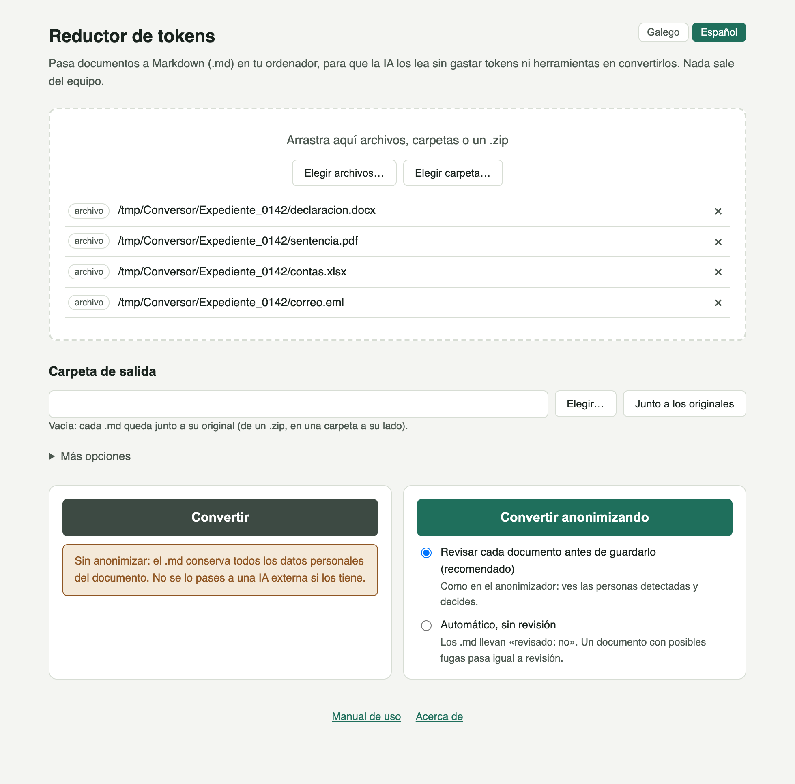
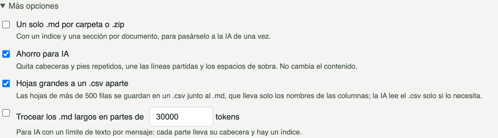
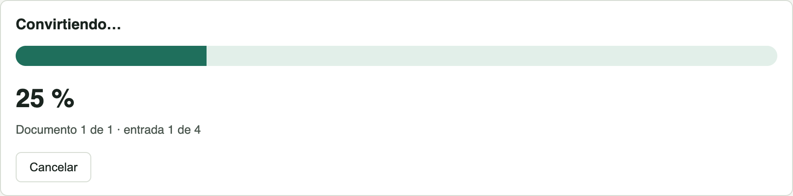
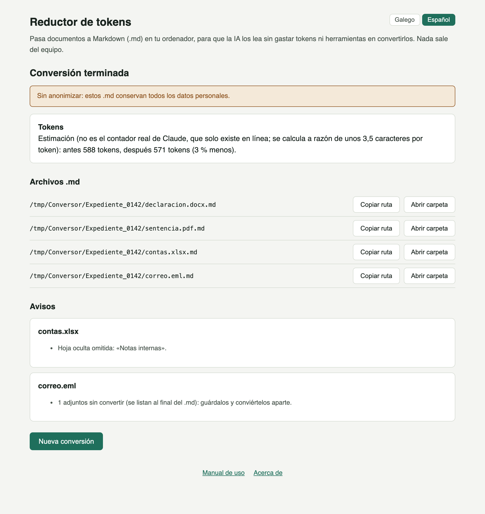
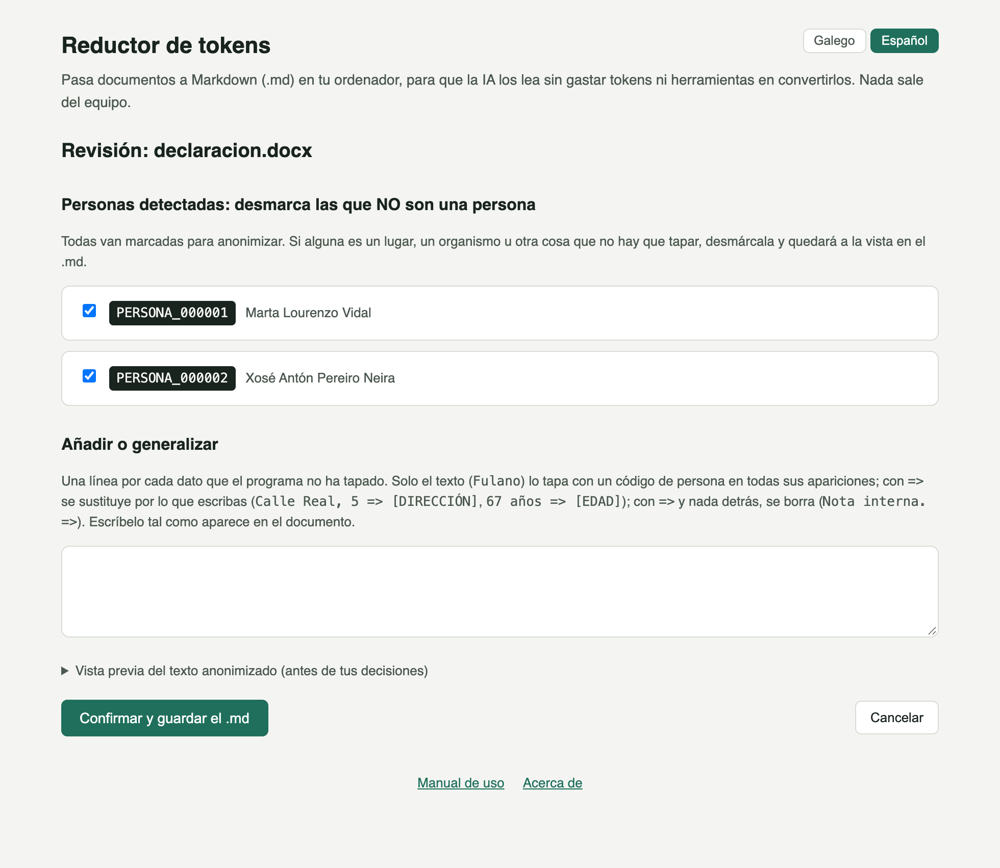
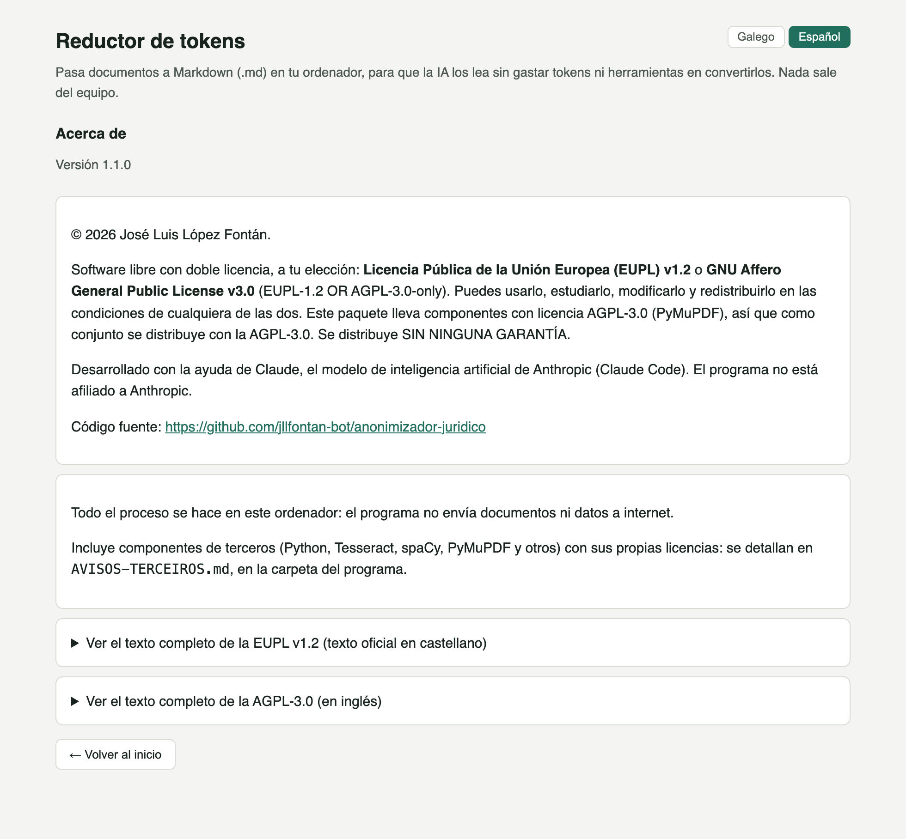

Guía práctica del programa, con capturas reales de cada pantalla (con datos inventados): cómo elegir los documentos, qué opciones hay para gastar menos tokens, qué lleva cada .md y cómo convertirlos anonimizando, con la misma revisión que el Anonimizador jurídico.
Si le das un PDF o un Word a una inteligencia artificial (Claude, ChatGPT, Copilot…), gasta tokens y herramientas en convertirlo a texto, y a veces lo lee mal: cabeceras repetidas en cada página, líneas cortadas, tablas deshechas. El programa hace esa conversión en tu ordenador y guarda un archivo .md (Markdown) con el texto limpio, con sus títulos, listas y tablas, listo para pasárselo a la IA.
Menú Inicio de Windows → Reductor de tokens. El programa se abre en una ventana propia; para cerrarlo, cierra esa ventana. No se conecta a internet ni abre ningún puerto en el ordenador: la ventana llama directamente al programa.

Elige los documentos
Arrástralos a la ventana o usa «Elegir archivos…» y «Elegir carpeta…». Puedes mezclar archivos, carpetas enteras y archivos .zip; cada uno aparece en la lista con su tipo y con una × para quitarlo.
Carpeta de salida (opcional)
Vacía, cada .md queda junto a su original (el de un .zip, en una carpeta a su lado). Con «Elegir…» puedes mandarlos todos a otra carpeta; «Junto a los originales» vuelve al comportamiento por defecto.
Pulsa «Convertir»
El documento original nunca se modifica. El archivo nuevo lleva el mismo nombre con el añadido .md: sentencia.pdf → sentencia.pdf.md, de modo que un .pdf y un .docx con el mismo nombre no se pisan.
Convertir sin anonimizar conserva todos los datos personales del documento (nombres, DNI, direcciones…), y el programa lo avisa en las dos pantallas. Si pasas ese .md a una IA en línea, esos datos salen del equipo. Para documentos con datos de terceros, usa «Convertir anonimizando» (sección 06).

.zip, junta todos los documentos en un solo archivo (expediente.md, con un índice al principio): cómodo para pasarle a la IA un expediente entero de una vez..md: se guardan en un .csv junto a él, y el .md lleva solo los nombres de las columnas y la ruta del .csv. La IA lee el .csv solo si lo necesita, y así el .md gasta muchos menos tokens. No se aplica al anonimizar.
.md de un tamaño máximo en tokens (por ejemplo 30.000), con un índice: útil cuando la IA tiene un límite por mensaje.

.md. No es el contador real de la IA, que solo existe en línea, pero sirve para comparar.Una cabecera mínima (pocos tokens, útil también para la IA) y el texto con marcas de Markdown: # para los títulos, tablas con | y una marca de página en los PDF. Por ejemplo, la primera página de una sentencia en PDF:
--- origen: sentencia.pdf paginas: 3 anonimizado: no convertido: 2026-10-31, Reductor de tokens 1.1.0 --- <!-- cabeceras y pies de página --> JUZGADO DE PRIMERA INSTANCIA N.º 2 DE LUGO <!-- página 1 --> # SENTENCIA 214/2026 ## ANTECEDENTES DE HECHO Juzgado de Primera Instancia. Notificación. Por medio de la presente se comunica…
La cabecera del juzgado, que se repetía en cada página, aparece una sola vez al principio. En los documentos digitalizados el texto es el que lee el reconocimiento de texto (OCR), con algún error posible.
El botón «Convertir anonimizando» usa el mismo motor que el Anonimizador jurídico: los nombres, DNI, teléfonos, direcciones y demás datos personales pasan a códigos (PERSONA_000001, [TELÉFONO]…) antes de escribir el .md. Usa también el mismo registro cifrado (Documentos\Anonimizador), de modo que una persona recibe el mismo código en los dos programas.
Revisar cada documento (recomendado, por defecto)
Antes de guardar cada .md aparece la pantalla de revisión, como en el anonimizador: las personas detectadas (desmarca las que no son una persona) y un recuadro para tapar lo que se haya escapado o generalizar un dato.

O automático, sin revisión
Para lotes grandes. El programa recuerda tu elección. Cada .md lleva revisado: no en la cabecera, el resultado resume las personas marcadas, y un documento con posibles fugas pasa igual por la revisión.
El .md anonimizado se llama <nombre anonimizado>.anonimizado.<extensión>.md y lleva anonimizado: sí en la cabecera:
--- origen: declaracion.docx anonimizado: sí revisado: sí convertido: 2026-10-31, Reductor de tokens 1.1.0 --- Declaración de PERSONA_000001 PERSONA_000001, con DNI PERSONA_000001 y teléfono [TELÉFONO], vecina de Lugo, declara que conocía a PERSONA_000002 desde hacía diez años…
Revisa siempre el .md antes de pasarlo a una IA externa. Mientras se conserve el registro, el resultado está seudonimizado, no anonimizado de forma irreversible: la correspondencia entre cada código y la persona real se puede consultar con el Anonimizador jurídico (reversión con contraseña y motivo).
| Formato | Sin anonimizar | Anonimizando |
|---|---|---|
| PDF con texto y escaneados (OCR) | Sí, con títulos, tablas y páginas | Sí |
.docx, .odt, .txt | Sí, con títulos, listas y tablas | Sí |
Imágenes (.jpg, .png, .tif…) | Sí, el texto que lee el OCR | Sí |
Hojas de cálculo (.xlsx, .ods, .csv) | Sí, cada hoja como tabla; las ocultas, fuera y con aviso | Todavía no |
Presentaciones (.pptx, .odp) | Sí, diapositiva a diapositiva, con las notas del orador | Todavía no |
Páginas web guardadas (.html) | Sí, sin menús ni pies de la web | Todavía no |
Correos guardados (.eml) | Sí: asunto, remitente y destinatarios, fecha, texto y lista de adjuntos (los adjuntos se convierten aparte) | Todavía no |
Carpetas y .zip | Sí, cada documento de dentro | Sí, los formatos que admite |
«Todavía no»: esos formatos tienen sitios donde se esconden datos (comentarios, hojas ocultas, cabeceras de un correo…) y solo se convertirán anonimizando cuando cada uno tenga sus propias pruebas de fugas. Mientras, en el modo anonimizado quedan fuera, listados como omitidos.
.md salen a internet, y el programa no abre ningún puerto.Documentos\Anonimizador (la misma carpeta que el anonimizador) se guarda preferencias.json (idioma y modo de revisión) y, solo si conviertes anonimizando, el registro cifrado datos_rexistro, con la clave en el Administrador de credenciales de Windows. Nada de eso se borra al desinstalar: sin el registro no se podría saber a quién corresponde cada código.
| Pregunta | Respuesta |
|---|---|
| ¿Por qué Markdown y no texto simple? | Porque conserva la estructura (títulos, listas, tablas) con muy pocos caracteres, y las IA lo leen muy bien. Un PDF o un Word cuestan muchos más tokens de convertir. |
| ¿El .md ocupa lo mismo que el texto del original? | Algo menos con el «Ahorro para IA», sobre todo en los PDF con cabeceras y pies repetidos. El resumen final da la estimación de tokens antes y después. |
| ¿Qué pasa si convierto el mismo documento dos veces? | Se sobrescribe el .md anterior. Anonimizando, la misma persona recibe el mismo código. |
| ¿El programa lee los .md que ya generó? | No: los .md de otras conversiones y los documentos .anonimizado del anonimizador quedan fuera, listados como «resultado de una conversión o anonimización anterior». |
| ¿Los adjuntos de un correo se convierten? | No: el .md del correo lista los adjuntos con su nombre y tamaño, y un aviso te recuerda guardarlos y convertirlos aparte. |
| ¿Puedo cambiar el idioma? | Sí, con los botones «Galego | Español» de arriba a la derecha. Se recuerda al cerrar el programa y cambia también las etiquetas de la cabecera de los .md. |
| ¿Necesito el Anonimizador jurídico? | No para convertir: los dos programas son independientes. Para consultar la identidad real detrás de un código (reversión), sí. |